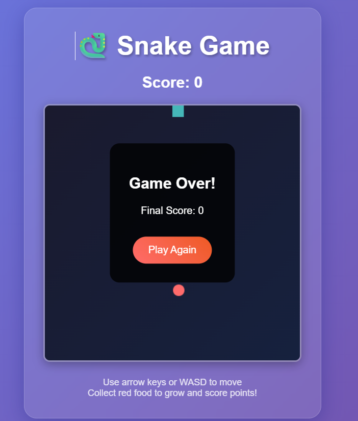
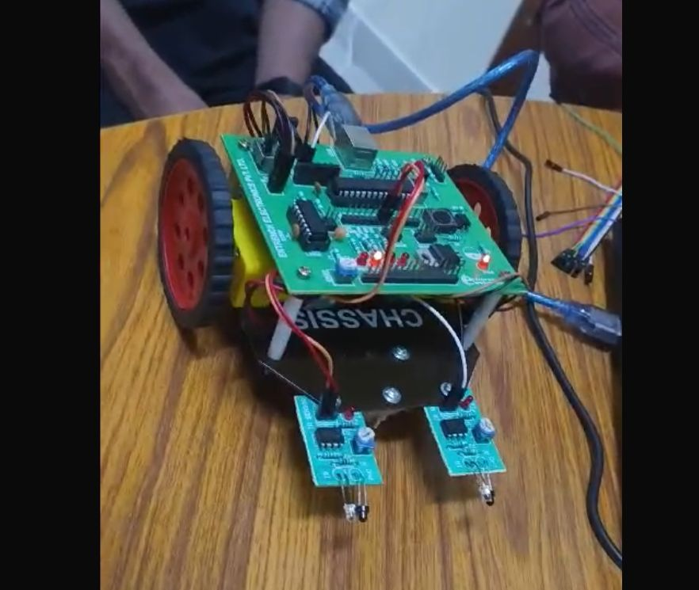

R C Car

Developed a mobile-controlled RC car that can be wirelessly operated via a smartphone app. This project demonstrates skills in embedded systems, circuit design, wireless communication, and mobile app development. The car receives Bluetooth commands and responds in real-time with actions like forward/backward movement and turning.
Snake Game
🐍 Snake Game – Description
> A minimalist arcade-style game built to showcase logic-based gameplay and real-time user interaction. Players control a snake that grows longer with each food item consumed, while navigating increasingly complex movement patterns. The game emphasizes algorithmic precision, collision detection, and dynamic rendering, offering a nostalgic yet technically engaging experience.
View Project

Line Following Robot
An autonomous robot that uses infrared sensors to detect and follow a line path on the ground. It processes sensor input to control motor speeds, allowing it to navigate curves and stay accurately on track. This project showcases skills in sensor integration, embedded programming, and real-time control systems.
